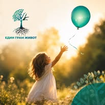
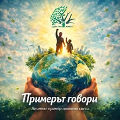
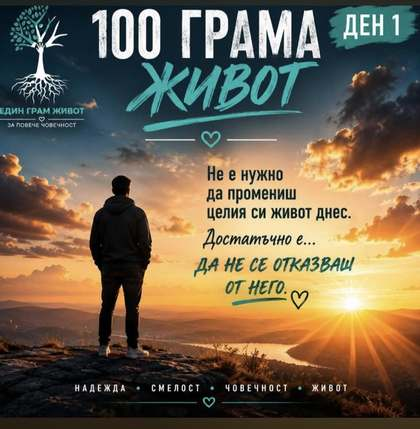

Програми
Практически модули за деца и родители, насочени към комуникация, правила, граници и ранна превенция.
Виж програмите„Един грам живот“ работи с деца, родители и специалисти, за да изгражда знания, доверие и устойчивост преди зависимостта да се превърне в проблем.


„Един грам живот“ започна през 2021 г. от родители, които търсеха отговор на един въпрос: Как да подготвим децата си за рисковете, преди да се сблъскат с тях?
От търсенето на работеща превенция започна пътят към родителските срещи, националните конференции, програмата за деца и родители и филма „Един грам живот“.

Програмата работи с деца от 5. и 6. клас и началото на 7. клас — във възрастта, в която се оформят идентичността, отношенията с връстници и личните граници. Чрез 7 психообучителни модула деца и родители развиват знания, увереност и устойчиво поведение.
Превенцията е знания, доверие, общност и позитивна среда около детето.
Практически модули за деца и родители, насочени към комуникация, правила, граници и ранна превенция.
Виж програмите
Спорт, театър, творчество и семейни преживявания, които създават позитивна среда около детето.
Виж инициативите
Национални срещи на родители, специалисти, организации и институции за превенция и общи действия.
Виж конференциитеВсеки ден показваме следващото послание от поредицата „Един грам живот“ — малък повод за разговор, който може да има голямо значение.
Разгледай 100 дни
Националните конференции срещат родители, специалисти, граждански организации и институции. Всяка конференция има собствена страница със снимки, участници, теми и резултати.
Всички конференцииОрганизацията зад развитието на инициативата „Един грам живот“.